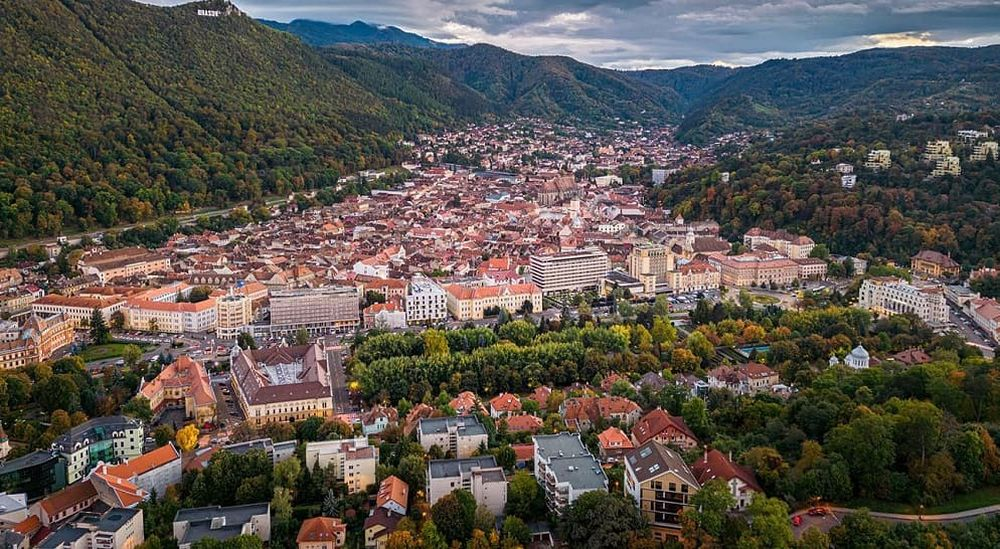

Explorați Brașovul - O călătorie în inima Carpaților
Brașovul este un oraș istoric și pitoresc, situat în inima Carpaților, oferind o varietate de atracții captivante pentru vizitatori:
-

Biserica Neagră - Monument istoric
Cea mai mare biserică gotică din România, cu o istorie bogată și o arhitectură impresionantă.
-

Piața Sfatului - Centru animat
O piață centrală plină de cafenele, restaurante și clădiri istorice, cu Turnul cu Ceas ca punct de atracție.
-

Muntele Tâmpa - Panorame spectaculoase
Urcarea pe acest munte oferă priveliști panoramice asupra orașului și împrejurimilor sale naturale.
-

Castelul Bran - Legendă și istorie
Situat la scurtă distanță de Brașov, acest castel este cunoscut și ca "Castelul lui Dracula".
-

Străzi pitorești - Orașul medieval
Explorați străzile înguste și pavate, cu case colorate și arhitectură tipică, pentru o călătorie în timp.
Concluzii
Brașovul combină istoria bogată, peisajele montane și atmosfera medievală pentru o experiență memorabilă.